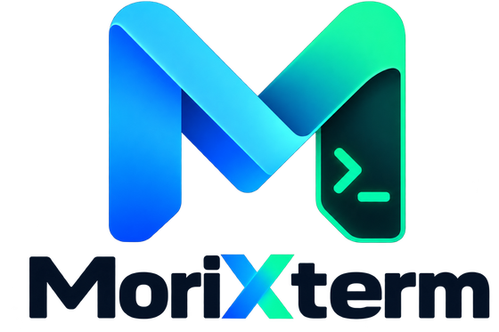

Interactive shell
Fast multi-tab terminals with search, themes, Unicode, and reconnect.
REMOTE WORKSPACE
SSH shells, RDP desktops, local terminals, and remote files in one focused desktop workspace.

Fast multi-tab terminals with search, themes, Unicode, and reconnect.
Launch secure RDP sessions using the native client available on your system.
Browse and manage SFTP files beside the active SSH terminal.
SQLite persistence, OS credential storage, backups, and application locking.